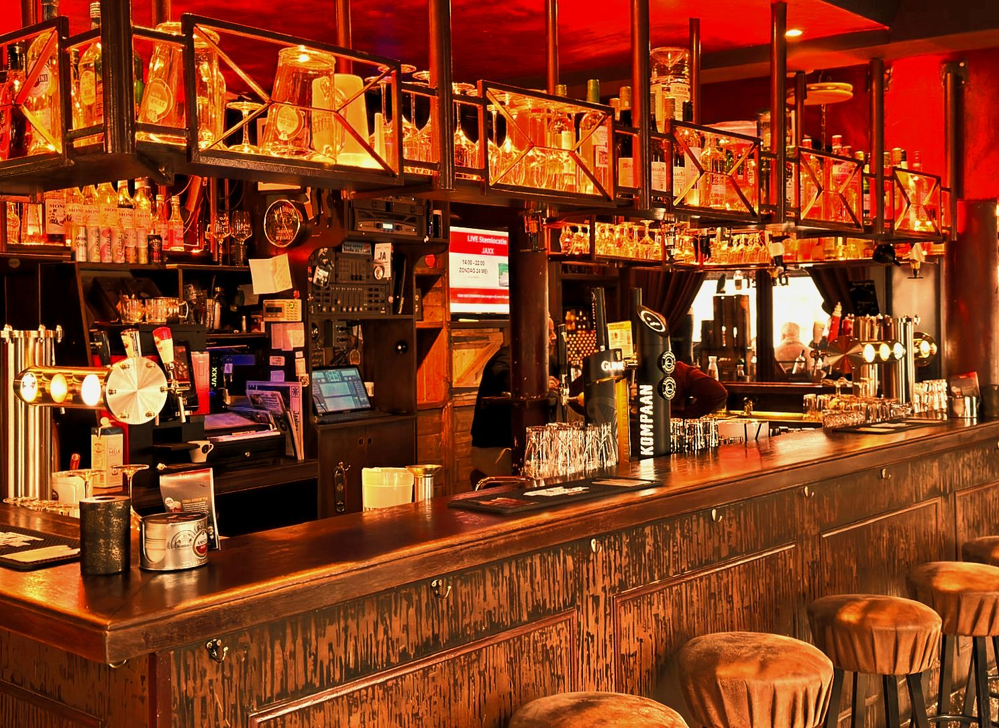
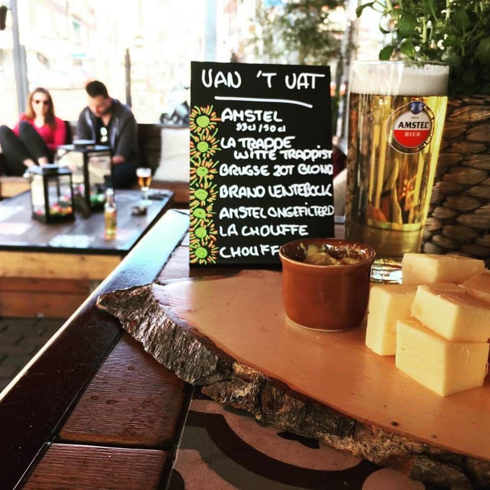
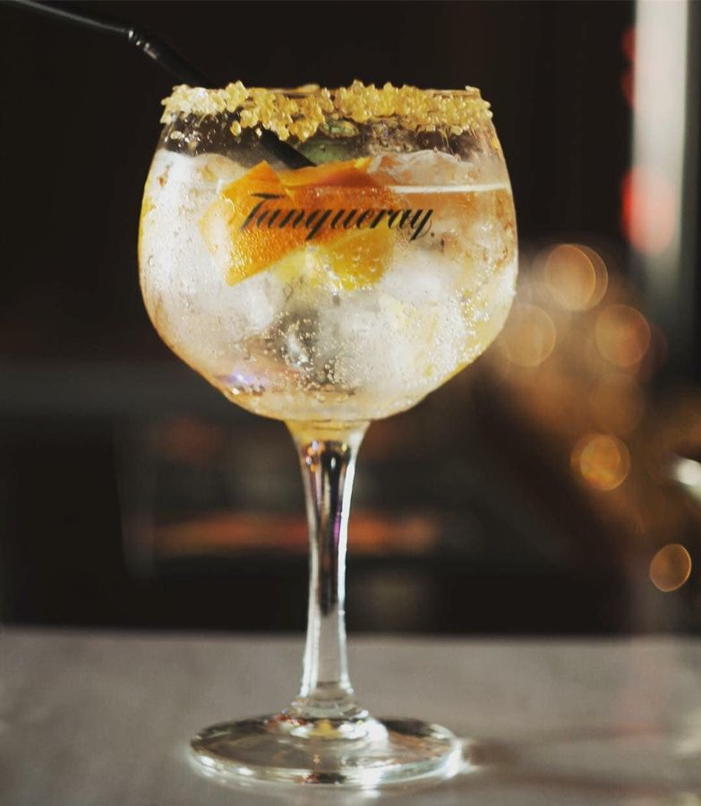
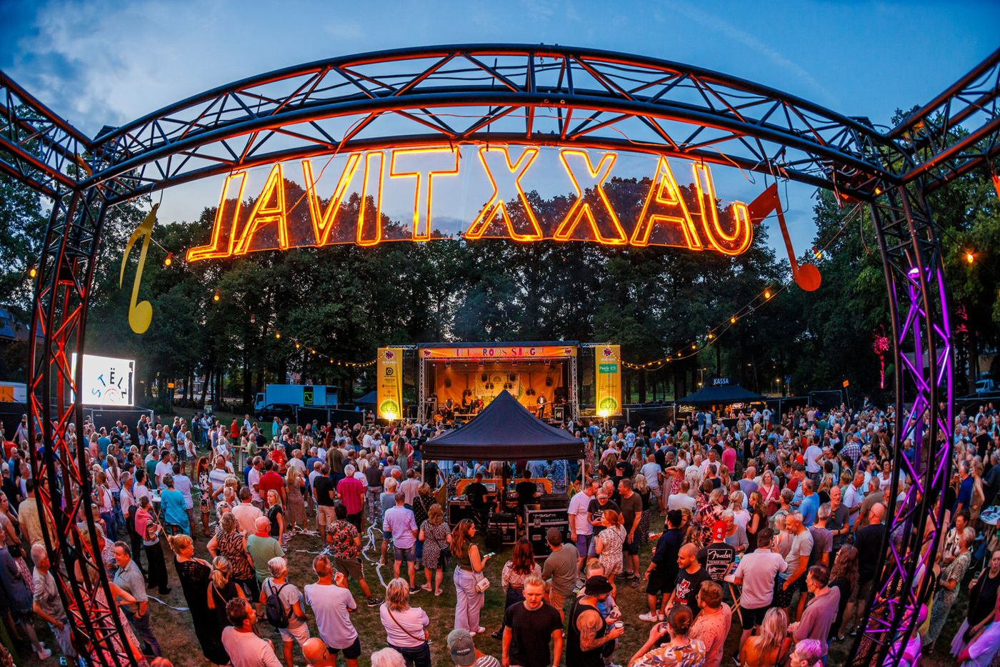
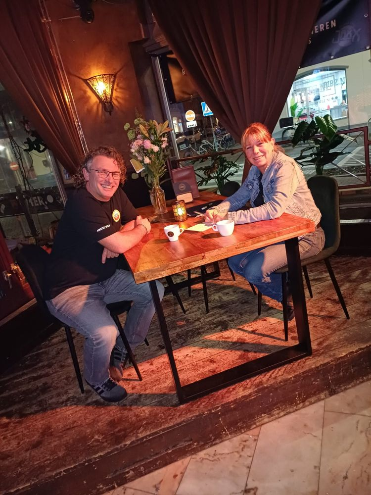

De huiskamer van Roosendaal
Bruin café midden in het oude centrum. Voor een bak koffie, een goed speciaalbier, live muziek, karaoke of gewoon voor de sfeer.
Proef, ontdek, geniet
Onze kaart is breed, want we verkopen liever geen "nee". We houden de markt in de gaten, luisteren naar suggesties van gasten en passen het assortiment geregeld aan.
Kwaliteit vinden we belangrijk, net als de juiste manier van serveren. En we vragen een eerlijke prijs: wie rijk wil worden, moet niet de horeca in.
Spiek alvast op de bierkaart ›

Binnenkort bij JaxX
Bands uit de regio, karaoke en quizzen. Iedere week wel iets te doen.
Karaoke
Za · vanaf 21:00Waan je de ster van de avond!
Live: Haags Plagiaat
Za · vanaf 21:00Goldband, Golden Earring, Anouk, Di-rect en nog meer Haagse trots.
NEON 5
Za · vanaf 21:30De energieke coverband komt de zaak nog een keer op zijn kop zetten.
Danny en Tim's Filmquiz
Zo · 14:00 – 19:00Strijd met je team van 3 of 4 personen om de hoofdprijs en eeuwige roem.
Tapage: Dead Singers Society
Za · vanaf 21:00Nummers van de grootste zangers die ons zijn ontvallen.
11/11 Ontbijt
Wo · vanaf 9:11Het inschrijfgeld van € 11,11 gaat naar het Roosendaals Jeugdontbijt.
Ook op de agenda: Tennessee Trouble, De Muziekquiz, KerstKaraoke en het All-in Oudjaarsfeest. Hele agenda ›

JaxXtival: live muziek in het park
Elke woensdag in de zomervakantie organiseren we gratis zomerconcerten in het Vrouwenhofpark. Een festival voor en door Roosendalers, met lokale bands, tributebands en activiteiten voor de kids.
Na afloop gaat het feest door: de AfterParkies vanaf 23:00 bij Bruin Café JaxX.

Een nieuw hoofdstuk
Na 11 carnavals droegen Jack en Yonne in februari het stokje over. Sindsdien zetten Berend en Natasja Bruin Café JaxX voort, met net zoveel liefde voor live muziek, uitgaan en samen genieten.
Iedereen is welkom, ongeacht achtergrond. We willen dat je je thuis voelt vanaf het moment dat je binnenstapt, met bediening die snel en persoonlijk is. Heb je een idee of suggestie? Stap vooral naar ons toe.
"De huiskamer van Roosendaal blijft gewoon bestaan. Alleen met een nieuw hoofdstuk en nieuwe energie."Berend en Natasja
Kom langs of geef je feest bij ons
Je vindt ons midden in het oude centrum, aan de Molenstraat 60.
Jouw feestje geven? Dat kan!
Verjaardag, borrel of iets anders in gedachten? Alles is mogelijk. Wij nemen alles uit je handen én ruimen de rotzooi op.
06 15 43 38 62Openingstijden
| Maandag | Gesloten |
| Dinsdag | 16:00 – 02:00 |
| Woensdag | 15:00 – 02:00 |
| Donderdag | 15:00 – 02:00 |
| Vrijdag | 14:00 – 04:00 |
| Zaterdag | 13:00 – 04:00 |
| Zondag | 12:00 – 02:00 |
Adres
Molenstraat 60
4701 JT Roosendaal
Route plannen ›
Speel je in een band? Mail beschikbare data, gage-indicatie en wat materiaal naar jaxx@bruincafejaxx.nl.